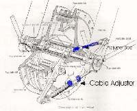
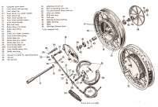

Some older front drum brakes have two cam arms, one at each end of the shoes, joined by a rod. Both cams push their shoe end out. For full braking, both ends of each shoe must touch the drum at the same moment. If one cam is set too early or too late, the brake is weaker than a single-cam brake. Single leading shoe brakes have one cam and use Adjust a drum brake.
Safety
- Work with the bike on a stand and the front wheel off the ground.
- Too tight is as dangerous as too loose. A dragging brake heats up, wears fast and can lock the wheel.
- Do not ride until the wheel spins freely and the brake works well at walking speed.
You need
- The free play value for your bike from the manual. No generic value is given here.
Steps
- Find the two cam arms and the adjustable rod between them. Find the cable adjuster at the wheel and the one at the lever.
- Loosen the rod locknut so the rod length can be changed. Loosen the cable adjuster at the lever until the cable is slack.
- Tighten the cable adjuster at the wheel until the first shoe starts to drag. Turn the wheel by hand to feel the amount of drag.
- Now lengthen or shorten the joining rod so the second cam brings its shoe end in. The drag should feel clearly heavier, about double what it was.
- Tighten the rod locknut without moving the rod.
- Back off the cable adjuster so the wheel spins freely. Then set free play at the lever with the lever adjuster, as the manual says. A small lever gap lets the brake come on early, but the lever must not touch the bar when pulled hard.
- Spin the wheel and check there is no drag.
Check your work
- The wheel spins freely with the brake off.
- The brake bites early in the lever travel and the lever stops short of the bar.
- The drum is not hot after a short ride.
If it did not fix the problem
- The brake is still weak or noisy: Drum brake is weak or Drum brake squeaks or grinds.
- The brake drags: Brake drags and the wheel does not spin freely.
- Shoes worn or cam stiff: Service a drum brake.